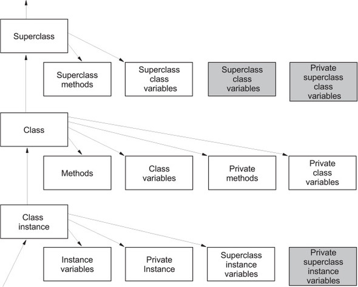

fundamentals¶
__main__¶
to make a file that can be both imported as a module and run as a script
if python is running module (source file) as main program it sets __name__ = “__main__”
if file imported as module __name__ = “that_modules_name”
code in if
__name__ == "__main__":block won’t run
packaging¶
involves use of the modules setuptools and distutils
should contain a file called
__init__.pyparent dir has to have:
README.txt LICENSE.txt setup.py
# example
Learn/
LICENSE.txt
README.txt
setup.py
learn/
__init__.py
learn.py
learn2.py
setup.py¶
contains information necessary to assemble the package so it can be uploaded to PyPI and installed with pip
After creating the setup.py file, upload it to PyPI, or use the command line to create a binary distribution (an executable installer)
To build a source distribution, use the command line to navigate to the directory containing setup.py, and run the command
python setup.py sdistRun
python setup.py bdistor, for Windows, python setup.py bdist_wininst to build a binary distributionUse
python setup.py register, followed bypython setup.py sdist uploadto upload a packageFinally, install a package with
python setup.py install
# example setup.py
from distutils.core import setup
setup(
name='SoloLearn',
version='0.1dev',
packages=['sololearn',],
license='MIT',
long_description=open('README.txt').read(),
)
enums¶
When and where to use enums?
When you have a variable that takes one of a limited set of possible values. For example, the days of the week:
class Weekday(Enum):
MONDAY = 1
TUESDAY = 2
WEDNESDAY = 3
THURSDAY = 4
FRIDAY = 5
SATURDAY = 6
SUNDAY = 7
Why do we need enum? What are the advantages?
Enums are advantageous because they give a name to a constant, which makes code more readable; and because the individual members cannot be rebound, making Python Enums semi-constant (because the Enum itself could still be rebound).
Besides more readable code, debugging is also easier as you see a name along with the value, not just the value
from enum import Enum, unique, auto
@unique
class Fruit(Enum):
APPLE = 1
BANANA = 2
ORANGE = 3
TOMATO = 4
PEAR = auto()
def main():
# enums have human-readable values and types
print(Fruit.APPLE)
print(type(Fruit.APPLE))
print(repr(Fruit.APPLE))
# enums have name and value properties
print(Fruit.APPLE.name, Fruit.APPLE.value)
# print the auto-generated value
print(Fruit.PEAR.value)
# enums are hashable - can be used as keys
myFruits = {}
myFruits[Fruit.BANANA] = "They call me mellow yellow"
print(myFruits[Fruit.BANANA])
if __name__ == "__main__":
main()
Fruit.APPLE
<enum 'Fruit'>
<Fruit.APPLE: 1>
APPLE 1
5
They call me mellow yellow
Ternary operator¶
a = 7
b = 1 if a >= 5 else 42
print(b) # b = 1 cuz 7>=5
status = 1
msg = "logout" if status = 1 else "login"
b = 1 if 2+2 == 5 else 2
x = {"realtime_start": start, "units": series.unit} if series.unit == "lin" else {"units": series.unit}
# don't do this
x = {"realtime_start": start, "units": series.unit} if series.unit == "lin" else x = {"units": series.unit}
more on else¶
With the for or while loop, the code within it is called if the loop finishes normally (when a break statement does not cause an exit from the loop)
for i in range(10):
if i == 999:
break
else:
print("this is executed bc i goes from 0 up to 9, not 999")
for i in range(10):
if i == 5:
break # -> breaks loop, else block not run
else:
print("this is NOT executed, i = 5 breaks the loop")
for i in range(10):
if i > 5:
print(i)
break # will print 6 & break
else:
print("7")
executed if NO ERROR occurs in TRY statement
try:
print(5 * 4/0)
except ZeroDivisionError:
print("idiot") # will print idiot :D
else:
print("yay else ran") # did not run bc error ocurred
strings¶
string operations¶
# strings and bytes are not directly interchangeable
# strings contain unicode, bytes are raw 8-bit values
# define some starting values
b = bytes([0x41, 0x42, 0x43, 0x44])
print(b)
# This is a string
s = "This is a string"
print(s)
# Try combining them. This will cause an error:
# print(s+b)
# Bytes and strings need to be properly encoded and decoded
# before you can work on them together
s2 = b.decode('utf-8')
print(s+s2)
# This is a stringABCD
b2 = s.encode('utf-8')
print(b+b2)
# b'ABCDThis is a string'
# encode the string as UTF-32
b3 = s.encode('utf-32')
print(b3)
"""
b'\xff\xfe\x00\x00T\x00\x00\x00h\x00\x00\x00i\x00\x00\x00s\x00\x00\x00
\x00\x00\x00i\x00\x00\x00s\x00\x00\x00 \x00\x00\x00a\x00\x00\x00
\x00\x00\x00s\x00\x00\x00t\x00\x00\x00r\x00\x00\x00i\x00\x00\x00n\x00\x00\x00g\x00\x00\x00'
"""
string templates¶
from string import Template
# Usual string formatting with format()
str1 = "You're watching {0} by {1}".format("Advanced Python", "Batman")
print(str1)
""" You're watching Advanced Python by Batman """
# create a template with placeholders
templ = Template("You're watching ${title} by ${author}")
# use the substitute method with keyword arguments
str2 = templ.substitute(title="Advanced Python", author="Batman")
print(str2)
""" You're watching Advanced Python by Batman """
# use the substitute method with a dictionary
data = {
"author": "Batman",
"title": "Advanced Python"
}
str3 = templ.substitute(data)
print(str3)
""" You're watching Advanced Python by Batman """
sorting¶
# words.txt = /usr/share/dict/words
words = sorted({line.strip().lower() for line in open('words.txt', 'r')})
sorted("aaron")
['a', 'a', 'n', 'o', 'r']
sorted("elvis") == sorted("lives")
True
sorted("elvis") == sorted("sings")
False
'-'.join(sorted("aaron"))
''.join(sorted("aaron"))
'a-a-n-o-r'
# compute the signature string for a word
def signature(word):
return ''.join(sorted(word))
# brute-force anagram search: compare myword's signature
# with the signatures of all words in the dictionary
def find_anagram(myword):
mysig = signature(myword)
for word in words:
if mysig == signature(word):
print(word)
find_anagram('dictionary')
# make a dict that maps each signature to the set of words with that signature;
# each signature will map to at least one word
words_by_sig = collections.defaultdict(set)
for word in words:
words_by_sig[signature(word)].add(word)
words_by_sig
# keep only the key/value pairs where the set has more than one element;
# this is now a regular dict
anagrams_by_sig = {sig: wordset for sig, wordset in words_by_sig.items() if len(wordset) > 1}
anagrams_by_sig
# smart anagram search: look up myword's signature, return set
def find_anagram_fast(myword):
sig = signature(myword)
return anagrams_by_sig[sig]
find_anagram_fast('tops')
find_anagram_fast('michele')
# handle case when myword's signature is not found, returning the empty set
def find_anagram_fast(myword):
sig = signature(myword)
try:
return anagrams_by_sig[sig]
except KeyError:
return set()
find_anagram_fast('Michele')
# list of signatures, sorted by length, longest first
sorted(anagrams_by_sig.keys(), key=len, reverse=True)
# list of anagram sets, sorted by signature length
[anagrams_by_sig[sig] for sig in sorted(anagrams_by_sig.keys(), key=len, reverse=True)]
# list of anagram sets, sorted by their length, largest first
sorted(anagrams_by_sig.values(), key=len, reverse=True)
range¶
range(number+1)¶
for count_25 in range(4+1): # note the +1 to indicate 4 is not included
print(count_25)
for count_25 in range(4+1):
print(count_25)
0
1
2
3
4
# loop over all possible counts for each coin (summing up to <= 1$);
# if the total amount is exactly $1, add current counts to "combinations"
combinations = []
for count_100 in range(1+1):
for count_50 in range(2+1):
for count_25 in range(4+1):
for count_10 in range(10+1):
for count_5 in range(20+1):
for count_1 in range(100+1):
if 100*count_100 + 50*count_50 + 25*count_25 + 10*count_10 + 5*count_5 + count_1 == 100:
combinations.append([count_100, count_50, count_25, count_10, count_5, count_1])
combinations
[[0, 0, 0, 0, 0, 100],
[0, 0, 0, 0, 1, 95],
[0, 0, 0, 0, 2, 90],
[0, 0, 0, 0, 3, 85],
[0, 0, 0, 0, 4, 80],
[0, 0, 0, 0, 5, 75],
[0, 0, 0, 0, 6, 70],
[0, 0, 0, 0, 7, 65],
[0, 0, 0, 0, 8, 60],
[0, 0, 0, 0, 9, 55], # cut here ..
[0, 1, 1, 0, 2, 15],
[0, 1, 1, 0, 3, 10],
[0, 1, 1, 0, 4, 5],
[0, 1, 1, 0, 5, 0],
[0, 1, 1, 1, 0, 15],
[0, 1, 1, 1, 1, 10],
[0, 1, 1, 1, 2, 5],
[0, 1, 1, 1, 3, 0],
[0, 1, 1, 2, 0, 5],
[0, 1, 1, 2, 1, 0],
[0, 1, 2, 0, 0, 0],
[0, 2, 0, 0, 0, 0],
[1, 0, 0, 0, 0, 0]]
len(combinations)
293
underscore usage¶
Underscore _ is considered as “I don’t Care” or “Throwaway” variable in Python
ipython stores the last expression value to the special variable called _
underscore _ is also used for ignoring the specific values. If the values are not used, just assign the values to underscore
particular function implementation doesn’t need all of the parameters
10
12
_ # returns last value
12
_ * 3
36
# Ignore a value when unpacking
x, _, y = (1, 2, 3)
x # 1
y # 3
# Ignore the index
for _ in range(10):
do_something()
# not all params in def/lambda are needed
def callback(_):
return True
lambda _: 1.0 # don't require argument
list indexing¶
x = ["first", "second", "third", "fourth"]
y = [1, 2, 3, 4]
x[1:-1]
["second", "third"]
x[0:3]
# or
x[:3]
["first", "second", "third"]
x[2:]
["third", "fourth"]
# append list to end of list
x[len(x):] = [5, 6, 7]
# make copy you can modify
y = x[:]
# add list to front of list (prepend)
x[:0] # up to first element
x[:0] = [-1, 0]
x
[-1, 0, 1, 2, 3, 4, 5, 6, 7]
# delete part of list
x[1:-1] = [] # 2nd element up to last (0 -> 7) not including 7
x
[-1, 7]
# glue one list to another
x.extend(y)
# x.append(y) will add y list as an element, not extend
[1, 2, 3, 4, [5, 6, 7]]
del x[4]
[1, 2, 3, 4]
del x[:3]
[4]
z = [None] * 4
z
[None, None, None, None]
deep copy¶
if your list has other lists nested in it you may want a deep copy (lists are mutable)
original = [[0], 1]
# shallow copy just references to original list
shallow = original[:]
import copy
# deep copy doesn't reference but creates new list
deep = copy.deepcopy(original)
unpacking¶
x = (1, 2, 3, 4)
a, b, *c = x
a, b, c
(1, 2, [3, 4])
a, *b, c = x
a, b, c
(1, [2, 3], 4)
*a, b, c = x
a, b, c
([1, 2], 3, 4)
a, b, c, d, *e = x
a, b, c, d, e
(1, 2, 3, 4, [])
element with * absorbs all elements not matching the others as a list if there are no surplus items it receives an empty list
dictionaries¶
get()¶
x = {1: 'one', 2: 'two', 3: '', 4: 'four'}
x.get(2)
'two'
x.get(2, 'if no key 2 return this')
'two'
# no key 5, so it will return 'pump it'
x.get(5, 'pump it')
'pump it'
setdefault()¶
{1: 'one', 2: 'two', 3: '', 4: 'four'}
# no key 5, so the key is created along with 'five' value
x.setdefault(5, 'five')
'five'
x
{1: 'one', 2: 'two', 3: '', 4: 'four', 5: 'five'}
dict as cache¶
calc_cache = {}
def calculation(x, y, z):
if (x, y, z) in calc_cache:
return calc_cache[(x, y, z)]
else:
# some time-consuming calculation
calc_cache[(x, y, z)] = result
return result
set algebra¶
# set algebra showcase
>>> blue_eyes = {'Olivia', 'Harry', 'Lily', 'Jack', 'Amelia'}
>>> blond_hair = {'Harry', 'Jack', 'Amelia', 'Mia', 'Joshua'}
>>> can_smell_hidrogencyanide = {'Harry', 'Amelia'}
>>> taste_ptc = {'Harry' , 'Lily', 'Amelia', 'Lola'}
>>> o_blood = {'Mia', 'Josjua', 'Lily', 'Olivia'}
>>> b_blood = {'Amelia', 'Jack'}
>>> a_blood = {'Harry'}
>>> ab_blood = {'Joshua', 'Lola'}
# find people with blond hair, blue eyes or both -> use union method
# is commutative
>>> blue_eyes.union(blond_hair)
{'Amelia', 'Mia', 'Harry', 'Olivia', 'Joshua', 'Jack', 'Lily'}
>>> blue_eyes.union(blond_hair) == blond_hair.union(blue_eyes)
True
# find people with blond hair AND blue eyes -> use intersection method
>>> blue_eyes.intersection(blond_hair)
{'Harry', 'Jack', 'Amelia'}
>>> blue_eyes.intersection(blond_hair) == blond_hair.intersection(blue_eyes)
True
# find people with blond hair who don't have blue eyes -> use difference method
# non-commutative because people who have blue eyes but not blond hair is not the same
>>> blond_hair.difference(blue_eyes)
{'Joshua', 'Mia'}
>>> blond_hair.difference(blue_eyes) == blue_eyes.difference(blond_hair)
False
# exclusively blond hair OR blue_eyes but not both -> symmetric_difference() method
# commutative
>>> blond_hair.symmetric_difference(blue_eyes)
{'Mia', 'Olivia', 'Joshua', 'Lily'}
>>> blond_hair.symmetric_difference(blue_eyes) == blue_eyes.symmetric_difference(blond_hair)
True
# 3 predicates to tell us about the relationship between sets
# check is one set is a subset of a set -> issubset() method
>>> can_smell_hidrogencyanide.issubset(blond_hair)
True
# test if people who can taste ptc can also taste hydrogencyanide -> use issuperset() method
>>> taste_ptc.issuperset(can_smell_hidrogencyanide)
True
# test that sets have no members in common -> isdisjoint() method
>>> a_blood.isdisjoint(o_blood)
True
comprehensions¶
list¶
evens = [2, 4, 6, 8, 10, 12, 14, 16, 18, 20]
odds = [1, 3, 5, 7, 9, 11, 13, 15, 17, 19]
# Perform a mapping and filter function on a list
evenSquared = list(
map(lambda e: e**2, filter(lambda e: e > 4 and e < 16, evens)))
print(evenSquared)
# [36, 64, 100, 144, 196]
# Derive a new list of numbers from given list
evenSquared = [e ** 2 for e in evens]
print(evenSquared)
# [4, 16, 36, 64, 100, 144, 196, 256, 324, 400]
# limit the items operated on with a predicate condition
oddSquared = [e ** 2 for e in odds if e > 3 and e < 17]
print(oddSquared)
# [25, 49, 81, 121, 169, 225]
# list of the squares from 1^2 to 10^2, including only those divisible by 4
squares_by_four = [i**2 for i in range(1, 11) if i**2 % 4 == 0]
dictionary¶
# dict of the squares from 1^2 to 10^2, where the keys are the unsquared numbers
squares_dict = {i: i**2 for i in range(1, 11)}
{1: 1, 2: 4, 3: 9, 4: 16, 5: 25, 6: 36, 7: 49, 8: 64, 9: 81, 10: 100}
capitals_by_country = {'United States': 'Washington, DC', 'France': 'Paris', 'Italy': 'Rome'}
countries_by_capital = {capital: country for country, capital in capitals_by_country.items()}
countries_by_capital
{'Washington, DC': 'United States', 'Paris': 'France', 'Rome': 'Italy'}
# define a list of temperature values
ctemps = [0, 12, 34, 100]
# Use a comprehension to build a dictionary
tempDict = {t: (t * 9/5) + 32 for t in ctemps if t < 100}
print(tempDict)
"""{0: 32.0, 12: 53.6, 34: 93.2}j""""
print(tempDict[12])
"""53.6"""
# Merge two dictionaries with a comprehension
team1 = {"Jones": 24, "Jameson": 18, "Smith": 58, "Burns": 7}
team2 = {"White": 12, "Macke": 88, "Perce": 4}
newTeam = {k: v for team in (team1, team2) for k, v in team.items()}
print(newTeam)
"""{'Jones': 24, 'Jameson': 18, 'Smith': 58, 'Burns': 7,
'White': 12, 'Macke': 88, 'Perce': 4}"""
generator comprehensions¶
similar syntax to list comprehensions
create a generator object
concise
lazy evaluation
(expr(item) for item in iterable)
million_squares = (x*x for x in range(1, 1000001)) # creates a generator object
list(million_squares) # force evaluation of the generator by using it to create a list
list(million_squares)
[] # repeating it = empty, generators are single use objects!
# each time we call a generator function, we create a generator object
sum(x*x for x in range(1, 1000001)) # sum of first 10mil squares, using a list comprehencsion would take 400MB!
333333833333500000
sum(x*x for x in range(1, 1000001) if x % 17) # with optional if condition
313726019609411764
note: we didn’t have to use extra parentheses to put a generator comprehension wihtin sum(), this improves readability
nested¶
counting = []
for i in range(1, 11):
for j in range(1, i+1):
counting.append(j)
# nested comprehension
counting = [j for i in range(1, 11) for j in range(1, i+1)]
print(counting)
[1, 1, 2, 1, 2, 3, 1, 2, 3, 4, 1, 2, 3, 4, 5, 1, 2, 3, 4, 5, 6, 1, 2, 3, 4, 5, 6, 7, 1, 2, 3, 4, 5, 6, 7, 8, 1, 2, 3, 4, 5, 6, 7, 8, 9, 1, 2, 3, 4, 5, 6, 7, 8, 9, 10]
any() all()¶
using any(or) and all(and) for iterable series of bool values
any([False, False, True])
True
all([False, False, True])
False
# Are there any prime numbers between 1328 and 1361?
any(is_prime(x) for x in range(1328, 1361))
False
# title() converts first character to uppercase
# check if all city names have capital letters
all(name == name.title() for name in ['London', 'New York', 'Sydney'])
True
any comprehensions¶
>>> cases_per_thousand = [50, 60, 38, 20, 45, 405, 29, 102, 29, 28, 10, 39]
>>>
>>> unsafe_places = [ cases > 300 for cases in cases_per_thousand ]
>>>
>>> unsafe_places
[False, False, False, False, False, True, False, False, False, False, False, False]
>>>
>>> any(unsafe_places)
True
>>>
>>> any([ cases > 300 for cases in cases_per_thousand ])
True
>>>
>>> any( cases > 300 for cases in cases_per_thousand )
True
none of the items = not any()
not any( cases > 300 for cases in cases_per_thousand )
or vs any
>>> "" or "Hello"
'Hello'
>>>
>>> any(["", "Hello", ""])
True
short circuit with any¶
>>> def generate_items(iterable):
... for item in iterable:
... print(f"Yielding : {item}")
... yield item
...
>>> numbers = [1, 2, 3, 4, 5, 6, 7]
>>> generator = generate_items(numbers)
>>>
>>> for number in generator:
... print(number)
...
Yielding : 1
1
Yielding : 2
2
Yielding : 3
3
Yielding : 4
4
Yielding : 5
5
Yielding : 6
6
Yielding : 7
7
>>>
>>> cases_per_thousand = [50, 60, 38, 20, 45, 405, 29, 102, 29, 28, 350, 39]
>>>
>>> any(generate_items(cases_per_thousand))
Yielding : 50
True
error handling¶
finally¶
finally is NOT dead code
def func(value):
try:
return float(value)
except ValueError:
return str(value)
finally:
print("Run this before returning")
walrus operator¶
aka assignment expressions
a = (b := 2 * 3) % 5
a
1
b
6
l = ["a", "aa", "aaa", "ab", "aab", "aabb"]
result = [set(el) for el in l if len(set(el)) > 1]
result
[{'a', 'b'}, {'a', 'b'}, {'a', 'b'}]
becomes
result = [chars for el in l if len(chars := set(el)) > 1]
result
[{'a', 'b'}, {'a', 'b'}, {'a', 'b'}]
import time
def transform(x):
time.sleep(0.2)
sign = 1 if x % 2 == 0 else -1
return sign * x ** 2
l = [1, 2, 3, 4, 5, 6, 7, 8, 10]
start = time.perf_counter()
result = [transform(x) for x in l if transform(x) > 0]
end = time.perf_counter()
print(result)
print(f"elapsed: {end - start:.1f} seconds")
[4, 16, 36, 64, 100]
elapsed: 2.9 seconds
becomes
start = time.perf_counter()
result = [val for x in l if (val := transform(x)) > 0]
end = time.perf_counter()
print(result)
print(f"elapsed: {end - start:.1f} seconds")
[4, 16, 36, 64, 100]
elapsed: 1.8 seconds
building lists, dicts:
# lists
l = [
(start := 10),
(intermediate := start + 10),
start + intermediate
]
l
[10, 20, 30]
# dictionaries
d = {
"start": (start := 10),
"intermediate": (intermediate := start + 10),
"last": start + intermediate
}
d
{'start': 10, 'intermediate': 20, 'last': 30}
deck of cards¶
from collections import defaultdict
def suit_counts(hand):
result = defaultdict(int)
for face, suit in hand:
result[suit] += 1
return dict(result)
suit_counts(hand)
{'C': 2, 'H': 2, 'D': 1}
def hand_has_all_suits(suit_counts):
return len(suit_counts) == 4
from itertools import repeat
random.seed(0)
hands = [
hand
for hand in [random.choices(deck, k=5) for _ in range(10)]
]
hands
[[('6', 'C'), ('2', 'C'), ('10', 'H'), ('2', 'H'), ('2', 'D')],
[('10', 'H'), ('3', 'C'), ('4', 'H'), ('K', 'H'), ('6', 'D')],
[('10', 'C'), ('2', 'D'), ('3', 'H'), ('2', 'C'), ('8', 'D')],
[('2', 'H'), ('10', 'C'), ('A', 'C'), ('5', 'C'), ('9', 'C')],
[('5', 'H'), ('K', 'D'), ('9', 'C'), ('J', 'D'), ('K', 'H')],
[('7', 'S'), ('J', 'H'), ('7', 'D'), ('10', 'C'), ('K', 'C')],
[('K', 'H'), ('7', 'C'), ('2', 'H'), ('4', 'C'), ('4', 'D')],
[('2', 'S'), ('K', 'D'), ('9', 'H'), ('5', 'C'), ('10', 'D')],
[('2', 'S'), ('A', 'H'), ('8', 'C'), ('A', 'S'), ('5', 'H')],
[('8', 'C'), ('J', 'S'), ('5', 'D'), ('A', 'S'), ('K', 'C')]]
turn to the walrus operator to avoid calculating suit_counts twice, and simplify the comprehension:
random.seed(0)
hands = [
(hand, counts)
for _ in range(10)
if hand_has_all_suits(counts := suit_counts(hand := random.choices(deck, k=5)))
]
for hand in hands:
print(suit_counts(hand[0]))
print(hand[1])
print('-' * 20)
{'S': 1, 'H': 1, 'D': 1, 'C': 2}
{'S': 1, 'H': 1, 'D': 1, 'C': 2}
--------------------
{'S': 1, 'D': 2, 'H': 1, 'C': 1}
{'S': 1, 'D': 2, 'H': 1, 'C': 1}
--------------------
while loop¶
without walrus
def validate_flag(x):
return x.casefold() in {'y', 'n'}
is_valid = False
while not is_valid:
response = input("Do you want to abort: (Y/n): ")
is_valid = validate_flag(response)
if not is_valid:
print("Please enter Y/y or N/n")
print(f"You decided: {response.upper()}")
Do you want to abort (Y/n): n
You decided: N
with walrus
while not validate_flag(response := input("Do you want to abort (Y/n): ")):
print("Please enter Y/y or N/n")
print(f"You decided: {response.upper()}")
Do you want to abort (Y/n): n
You decided: N
any or all¶
is_ok = True
example = None
for s in l:
if len(s) <= 1:
is_ok = False
example = s
break
if not is_ok:
print(f"Invalid string found: {example}")
Invalid string found: c
But look at how we can leverage the walrus operator:
is_ok = all(len(example := s) > 1 for s in l)
if not is_ok:
print(f"Invalid string found: {example}")
Invalid string found: c
accumulations¶
data = [1, 2, 3, 4, 5, 6]
sums = []
sum_ = 0
for num in data:
sum_ = sum_ + num ** 2
sums.append(sum_)
becomes
sum_ = 0
[(sum_ := sum_ + num ** 2) for num in data]
calculate consecutive factorials without using recursion
prod = 1
[(prod := prod * num) for num in range(1, 6)]
[1, 2, 6, 24, 120]
limitations¶
you cannot use it in iterable unpacking
annot use it in augmented assignments such as
+=,*=, etc. See the example we just did with factorials and sums, we had to use the something likesum_ := sum_ + xyou cannot use it to create an attribute on a class
class Person:
pass
p = Person()
p.name = 'Fred'
p.name
'Fred'
p = Person()
p.name := 'Fred'
Cell In [49], line 2
p.name := 'Fred'
^
SyntaxError: cannot use assignment expressions with attribute
OOP¶
classes¶
self: the first argument to all instance methods init() instance method for initializing new objects
warning: init() is an initializer, not a constructor, self is similar to this. init() is to configure an object that already exists by the time it is called
why self._number?
avoid name clash with number()
implementation details of objects start with _
note: using objects of different types through a common interface = polymorphism
"""Model for aircraft flights."""
class Flight:
"""A flight with a particular passenger aircraft."""
def __init__(self, number, aircraft):
if not number[:2].isalpha():
raise ValueError("No airline code in '{}'".format(number))
if not number[:2].isupper():
raise ValueError("Invalid airline code '{}'".format(number))
if not (number[2:].isdigit() and int(number[2:]) <= 9999):
raise ValueError("Invalid route number '{}'".format(number))
self._number = number
self._aircraft = aircraft
rows, seats = self._aircraft.seating_plan()
self._seating = [None] + [ {letter:None for letter in seats} for _ in rows ]
def number(self):
return self._number
def airline(self):
return self._number[:2]
def aircraft_model(self):
return self._aircraft.model()
def allocate_seat(self, seat, passenger):
"""Allocate a seat to a passenger.
Args:
seat: A seat designator such as '12C' or '21F'.
passenger: The passenger name.
Raises:
ValueError: If the seat is unavailable.
"""
rows, seat_letters = self._aircraft.seating_plan()
letter = seat[-1]
if letter not in seat_letters:
raise ValueError("Invalid seat letter {}".format(letter))
row_text = seat[:1]
try:
row = int(row_text)
except ValueError:
raise ValueError("Invalid seat row {}".format(row_text))
if row not in rows:
raise ValueError("Invalid row number {}".format(row))
if self._seating[row][letter] is not None:
raise ValueError("Seat {} is already occupied.".format(seat))
self._seating[row][letter] = passenger
def _parse_seat(self, seat):
"""Parse a seat designator into a valid row and letter.
Args:
seat: A seat designator such as 12F
Returns:
A tuple containing an integer and a string for row and seat.
"""
row_numbers, seat_letters = self._aircraft.seating_plan()
letter = seat[-1]
if letter not in seat_letters:
raise ValueError("Invalid seat letter {}".format(letter))
row_text = seat[:-1]
try:
row = int(row_text)
except ValueError:
raise ValueError("Invalid seat row {}".format(row_text))
if row not in row_numbers:
raise ValueError("Invalid row number {}".format(row))
return row, letter
def allocate_seat(self, seat, passenger):
"""Allocate a seat to a passenger.
Args:
seat: A seat designator such as '12C' or '21F'.
passenger: The passenger name.
Raises:
ValueError: If the seat is unavailable.
"""
row, letter = self._parse_seat(seat)
if self._seating[row][letter] is not None:
raise ValueError("Seat {} already occupied".format(seat))
self._seating[row][letter] = passenger
def relocate_passenger(self, from_seat, to_seat):
"""Relocate a passenger to a different seat.
Args:
from_seat: The existing seat designator for the
passenger to be moved.
to_seat: The new seat designator.
"""
from_row, from_letter = self._parse_seat(from_seat)
if self._seating[from_row][from_letter] is None:
raise ValueError("No passenger to relocate in seat {}".format(from_seat))
to_row, to_letter = self._parse_seat(to_seat)
if self._seating[to_row][to_letter] is not None:
raise ValueError("Seat {} already occupied".format(to_seat))
self._seating[to_row][to_letter] = self._seating[from_row][from_letter]
self._seating[from_row][from_letter] = None
def num_available_seats(self):
return sum( sum(1 for s in row.values() if s is None)
for row in self._seating
if row is not None)
def make_boarding_cards(self, card_printer):
for passenger, seat in sorted(self._passenger_seats()):
card_printer(passenger, seat, self.number(), self.aircraft_model())
def _passenger_seats(self):
"""An iterable series of passenger seating allocations."""
row_numbers, seat_letters = self._aircraft.seating_plan()
for row in row_numbers:
for letter in seat_letters:
passenger = self._seating[row][letter]
if passenger is not None:
yield (passenger, "{}{}".format(row, letter))
class Aircraft:
def __init__(self, registration):
self._registration = registration
def registration(self):
return self._registration
def num_seats(self):
rows, row_seats = self.seating_plan()
return len(rows) * len(row_seats)
class AirbusA319(Aircraft):
def model(self):
return "Airbus A319"
def seating_plan(self):
return range(1, 23), "ABCDEF"
class Boeing777(Aircraft):
def model(self):
return "Boeing 777"
def seating_plan(self):
# For simplicity's sake, we ignore complex
# seating arrangement for first-class
return range(1, 56), "ABCDEGHJK"
def make_flights():
f = Flight("BA758", AirbusA319("G-EUPT"))
f.allocate_seat('12A', 'Guido van Rossum')
f.allocate_seat('15F', 'Bjarne Stroustrup')
f.allocate_seat('15E', 'Anders Hejlsberg')
f.allocate_seat('1C', 'John McCarthy')
f.allocate_seat('1D', 'Richard Hickey')
g = Flight("AF72", Boeing777("F-GSPS"))
g.allocate_seat('55K', 'Larry Wall')
g.allocate_seat('33G', 'Yukihiro Matsumoto')
g.allocate_seat('4B', 'Brian Kernighan')
g.allocate_seat('4A', 'Dennis Ritchie')
return f, g
def console_card_printer(passenger, seat, flight_number, aircraft):
output = "| Name: {0}" \
" Flight: {1}" \
" Seat: {2}" \
" Aircraft: {3}" \
" |".format(passenger, flight_number, seat, aircraft)
banner = '+' + '-' * (len(output) - 2) + '+'
border = '|' + ' ' * (len(output) - 2) + '|'
lines = [banner, border, output, border, banner]
card = '\n'.join(lines)
print(card)
print()
Superclass¶
# Superclass
class Animal:
def __init__(self, name, color):
self.name = name
self.color = color
# Subclass
# If a class inherits from another with the same attributes or methods, it overrides them
class Cat(Animal):
def purr(self):
print("Purrr")
tiger = Cat("tiger", "black")
print(tiger.color)
tiger.purr
indirect inheritance¶
class A:
def method(self):
print("A method")
class B:
def another_method(self):
print("B method")
class C:
def third_method(self):
print("C method")
c = C()
c.method()
c.another_method()
c.third_method()
super function¶
class A: # superclass
def spam(self):
print(1)
class B(A)
def spam(self):
print(2)
super().spam() # calls spam method of superclass
B().spam()
magic methods¶
special method names nice summary on github
f ne is not implemented, it returns the opposite of eq There are no other relationships between the other operators
magic method |
operator |
|---|---|
__sub__ |
- |
__mul__ |
* |
__truediv__ |
/ |
__floordiv__ |
// |
__mod__ |
% |
__pow__ |
** |
__and__ |
& |
__xor__ |
^ |
__or__ |
| |
if x hasn’t implemented __add__, and x and y are of different types, then y.__radd__(x) is called. There are equivalent r methods for all magic methods in table
If __ne__ is not implemented, it returns the opposite of __eq__
class methods¶
are called by a class, which is passed to the cls parameter of the method
A common use of these are factory methods, which instantiate an instance of a class, using different parameters than those usually passed to the class constructor
@classmethod
similar to static methods in that they can be invoked before an object of the class has been instantiated or by using an instance of the class.
Class methods are implicitly passed the class they belong to as their first parameter, so you can code em more simply
class Rectangle:
def __init__(self, width, height):
self.width = width
self.height = height
def calculate_area(self):
return self.width * self.height
@classmethod
def new_square(cls, side_length):
return cls(side_lenght, side_length)
square = Rectangle.new_square(5)
print(square.calculate_area()) # 25
class Juice:
def __init__(self, name, capacity):
self.name = name
self.capacity = capacity
def __add__(self, other):
combined_cap = self.capacity + other.capacity
combined_name = self.name + '&' + other.name
return Juice(combined_name, combined_cap)
def __str__(self):
return (self.name + ' ('+str(self.capacity)+'L)')
a = Juice('Orange', 1.5)
b = Juice('Apple', 2.0)
result = a + b
print(result)
"""circle_cm module: contains the Circle class."""
class Circle:
"""Circle class"""
all_circles = []
pi = 3.14159
def __init__(self, r=1):
"""Create a Circle with the given radius"""
self.radius = r
self.__class__.all_circles.append(self)
def area(self):
"""determine the area of the Circle"""
return self.__class__.pi * self.radius * self.radius
@classmethod
def total_area(cls):
total = 0
for c in cls.all_circles: # use cls instead of self.__class__
total = total + c.area()
return total
>>> import circle_cm
>>> c1 = circle_cm.Circle(1)
>>> c2 = circle_cm.Circle(2)
>>> circle_cm.Circle.total_area()
15.70795
>>> c2.radius = 3
>>> circle_cm.Circle.total_area()
31.415899999999997
getattr setattr¶
class MyColor:
def __init__(self):
self.red = 50
self.green = 75
self.blue = 100
# use getattr to dynamically return a value
def __getattr__(self, attr):
if attr == "rgbcolor":
return self.red, self.green, self.blue
elif attr == "hexcolor":
return "#{0:02x}{1:02x}{2:02x}".format(self.red, self.green, self.blue)
else:
raise AttributeError
# use setattr to dynamically return a value
def __setattr__(self, attr, val):
if attr == "rgbcolor":
self.red = val[0]
self.green = val[1]
self.blue = val[2]
else:
super().__setattr__(attr, val)
# use dir to list the available properties
def __dir__(self):
return "rgbolor", "hexcolor"
def main():
# create an instance of myColor
cls1 = MyColor()
# print the value of a computed attribute
print(cls1.rgbcolor)
print(cls1.hexcolor)
# set the value of a computed attribute
cls1.rgbcolor = (125, 200, 86)
print(cls1.rgbcolor)
print(cls1.hexcolor)
# access a regular attribute
print(cls1.red)
# list the available attributes
print(dir(cls1))
if __name__ == '__main__':
main()
(50, 75, 100)
#324b64
(125, 200, 86)
#7dc856
125
['hexcolor', 'rgbolor']
properties¶
https://www.learnbyexample.org/python-properties/
class Person():
def __init__(self, value):
self.hidden_name = value
@property
def name(self):
print('Getting name:')
return self.hidden_name
@name.setter
def name(self, value):
print('Setting name to', value)
self.hidden_name = value
@name.deleter
def name(self):
print('Deleting name')
del self.hidden_name
class Person:
def __init__(self, value):
self.name = value
@property
def name(self):
return self._name
@name.setter
def name(self, value):
if not isinstance(value, str):
raise TypeError('Expected a string')
self._name = value
@name.deleter
def name(self):
raise AttributeError("Can't delete attribute")
p = Person(42) # Triggers TypeError: Expected a string
p = Person('Bob')
print(p.name) # Prints Bob
p.name = 42 # Triggers TypeError: Expected a string
del p.name # Triggers AttributeError: Can't delete attribute
class Temperature:
def __init__(self):
self._temp_fahr = 0
@property
def temp(self):
return (self._temp_fahr - 32) * 5 / 9
note: Without a setter, such a property is read-only. To change the property, you need to add a setter:
@temp.setter
def temp(self, new_temp):
self._temp_fahr = new_temp * 9 / 5 + 32
>>> t = Temperature()
>>> t._temp_fahr
0
>>> t.temp
-17.77777777777778
>>> t.temp = 34
>>> t._temp_fahr
93.2
>>> t.temp
34.0
note: The 0 in _temp_fahr is converted to centigrade before it’s returned 1. The 34 is converted back to Fahrenheit by the setter
class Rectangle(object):
def __init__(self, width, height):
self.width = width
self.height = height
@property
def area(self):
return self.width * self.height # computed prop
extend property functionality
class Person():
def __init__(self, value):
self.hidden_name = value
@property
def name(self):
print('Getting name:')
return self.hidden_name
@name.setter
def name(self, value):
print('Setting name to', value)
self.hidden_name = value
@name.deleter
def name(self):
print('Deleting name')
del self.hidden_name
class SubPerson(Person):
@property
def name(self):
print('Inside subperson getter')
return super().name
@name.setter
def name(self, value):
print('Inside subperson setter')
super(SubPerson, SubPerson).name.__set__(self, value)
@name.deleter
def name(self):
print('Inside subperson deleter')
super(SubPerson, SubPerson).name.__delete__(self)
properties demo¶
s = SubPerson('Bob')
# calls the getter
print(s.name)
# Prints Inside subperson getter
# Prints Getting name: Bob
# calls the setter
s.name = 'Sam'
# Prints Inside subperson setter
# Prints Setting name to Sam
# calls the deleter
del s.name
# Prints Inside subperson deleter
# Prints Deleting name
class Pizza:
def __init__(self, toppings):
self.toppings = toppings
@property
def pineapple_allowed(self):
return False
pizza = Pizza(["cheese", "tomato"])
print(pizza.pinapple_allowed)
pizza.pineapple_allowed = True
scope¶
class Mine:
def __init__(self):
self.x = 2
self.__y = 3
def print_y(self):
print(self.__y)
# >>> m = Mine()
# >>> print(m.x)
# 2
# >>> print(m.__y)
# Traceback (innermost last):
# File "<stdin>", line 1, in ?
# AttributeError: 'Mine' object has no attribute '__y'
# >>> m.print_y()
# 3
note:
to provide privacy it mangles the name of private variables and private methods when the code is compiled to bytecode. What specifically happens is that _classname is prepended to the variable name:
>>> dir(m)
['_Mine__y', 'x', ...]
When you’re in a method of a class, you have direct access to the local namespace (parameters and variables declared in the method),
the global namespace (functions and variables declared at the module level),
and the built-in namespace (built-in functions and built-in exceptions). These three namespaces are searched in the following order: local, global, and built-in

You also have access through the self variable to:
the instance’s namespace (instance variables, private instance variables, and superclass instance variables),
its class’s namespace (methods, class variables, private methods, and private class variables), and
its superclass’s namespace (superclass methods and superclass class variables).
These three namespaces are searched in the order instance, class, and then superclass

note: Private superclass instance variables, private superclass methods, and private superclass class variables can’t be accessed by using self. A class is able to hide these names from its children.
"""cs module: class scope demonstration module."""
mv ="module variable: mv"
def mf():
return "module function (can be used like a class method in other languages): mf()"
class SC:
scv = "superclass class variable: self.scv"
__pscv = "private superclass class variable: no access"
def __init__(self):
self.siv = "superclass instance variable: self.siv (but use SC.siv for assignment)"
self.__psiv = "private superclass instance variable: "no access"
def sm(self):
return "superclass method: self.sm()"
def __spm(self):
return "superclass private method: no access"
class C(SC):
cv = "class variable: self.cv (but use C.cv for assignment)"
__pcv = "class private variable: self.__pcv (but use C.__pcv for assignment)"
def __init__(self):
SC.__init__(self)
self.__piv = "private instance variable: self.__piv"
def m2(self):
return "method: self.m2()"
def __pm(self):
return "private method: self.__pm()"
def m(self, p="parameter: p"):
lv = "local variable: lv"
self.iv = "instance variable: self.xi"
print("Access local, global and built-in namespaces directly")
print("local namespace:", list(locals().keys()))
print(p) # parameter
print(lv) # local var
print("global namespace:", list(globals().keys()))
print(mv) # module var
print(mf()) # module func
print("Access instance, class, and superclass namespaces through 'self'")
print("Instance namespace:",dir(self))
print(self.iv) # instance var
print(self.__piv) # private instance var
print(self.siv) # superclass instance var
print("Class namespace:",dir(C))
print(self.cv) # class var
print(self.m2()) # method
print(self.__pcv) # private class var
print(self.__pm()) # private method
print("Superclass namespace:",dir(SC))
print(self.sm()) # superclass method
print(self.scv) # superclass var through instance
class C’s method m’s local namespace contains the parameters self (which is the instance variable) and p along with the local variable lv (all of which can be accessed directly):
>>> import cs
>>> c = cs.C()
>>> c.m()
Access local, global and built-in namespaces directly
local namespace: ['lv', 'p', 'self']
parameter: p
local variable: lv
method m’s global namespace contains the module variable mv and the module function mf (which, you can use to provide a class method functionality). There are also the classes defined in the module (the class C and the superclass SC). All these classes can be directly accessed:
global namespace: ['C', 'mf', '__builtins__', '__file__', '__package__',
'mv', 'SC', '__name__', '__doc__']
module variable: mv
module function (can be used like a class method in other languages): mf()
redefine getter/setter¶
If you only want to redefine one of the methods, it’s not enough to use @property by itself:
class SubPerson(Person):
@Person.name.getter
def name(self):
print('Inside subperson getter')
return super().name
If you just want to redefine the setter, use this code:
class SubPerson(Person):
@Person.name.setter
def name(self, value):
print('Inside subperson setter')
super(SubPerson, SubPerson).name.__set__(self, value)
static methods¶
"""circle module: contains the Circle class."""
class Circle:
"""Circle class"""
all_circles = [] # all circles that have been created
pi = 3.14159
def __init__(self, r=1):
"""Create a Circle with the given radius"""
self.radius = r
# when instance is initialized it adds itself to all_circles
self.__class__.all_circles.append(self)
def area(self):
"""determine the area of the Circle"""
return self.__class__.pi * self.radius * self.radius
@staticmethod
def total_area():
"""Static method to total the areas of all Circles """
total = 0
for c in Circle.all_circles:
total = total + c.area()
return total
>>> import circle
>>> c1 = circle.Circle(1)
>>> c2 = circle.Circle(2)
>>> circle.Circle.total_area()
15.70795
>>> c2.radius = 3
>>> circle.Circle.total_area()
31.415899999999997
>>> circle.__doc__
'circle module: contains the Circle class.'
>>> circle.Circle.__doc__
'Circle class'
>>> circle.Circle.area.__doc__
'determine the area of the Circle'
inheritance¶
class Shape:
def __init__(self, x, y):
self.x = x
self.y = y
class Square(Shape): # Square inherits from Shape
def __init__(self, side=1, x=0, y=0):
super().__init__(x, y) # must call __init__ method of Shape
self.side = side
class Circle(Shape): # Circle inherits from Shape
def __init__(self, r=1, x=0, y=0): # must call __init__ method of Shape
super().__init__(x, y)
self.radius = r
note:
Instead of using super, you could call Shape’s init by explicitly naming the inherited class using Shape.__init__(self, x, y), which would also call the Shape initialization function with the instance being initialized.
This technique wouldn’t be as flexible in the long run because it hardcodes the inherited class’s name, which could be a problem later if the design and the inheritance hierarchy change.
Inheritance also comes into effect when you attempt to use a method that isn’t defined in the base classes but is defined in the superclass.
class Shape:
def __init__(self, x, y):
self.x = x
self.y = y
def move(self, delta_x, delta_y):
self.x = self.x + delta_x
self.y = self.y + delta_y
>>> c = Circle(1)
>>> c.move(3, 4)
>>> c.x
3
>>> c.y
4
In the next example, a class variable z is defined for the superclass P and can be accessed in three ways: through the instance c, through the derived class C, or directly through the superclass P:
class P:
z = "Hello"
def set_p(self):
self.x = "Class P"
def print_p(self):
print(self.x)
class C(P):
def set_c(self):
self.x = "Class C"
def print_c(self):
print(self.x)
>>> c = C()
>>> c.set_p()
>>> c.print_p()
Class P
>>> c.print_c()
Class P
>>> c.set_c()
>>> c.print_c()
Class C
>>> c.print_p()
Class C
>>> c.z; C.z; P.z
'Hello'
'Hello'
'Hello'
OOP summary example¶
class Circle(Shape):
pi = 3.14159
all_circles = []
def __init__(self, r=1, x=0, y=0):
super().__init__(x, y)
self.radius = r
all_circles.append(self)
@classmethod
def total_area(cls):
area = 0
for circle in cls.all_circles:
area += cls.circle_area(circle.radius)
return area
@staticmethod
def circle_area(radius):
return Circle.pi * radius * radius
>>> c1 = Circle()
>>> c1.radius, c1.x, c1.y
(1, 0, 0)
>>> c2 = Circle(2, 1, 1)
>>> c2.radius, c2.x, c2.y
(2, 1, 1)
>>> c2.move(2, 2)
>>> c2.radius, c2.x, c2.y
(2, 3, 3)
>>> Circle.all_circles
[<__main__.Circle object at 0x7fa88835e9e8>, <__main__.Circle object at
0x7fa88835eb00>]
>>> [c1, c2]
[<__main__.Circle object at 0x7fa88835e9e8>, <__main__.Circle object at
0x7fa88835eb00>]
>>> Circle.total_area()
15.70795
>>> c2.total_area()
15.70795
>>> Circle.circle_area(c1.radius)
3.14159
>>> c1.circle_area(c1.radius)
3.14159
class Pizza:
def __init__(self, toppings):
self.toppings = toppings
self._pineapple_allowed = False
@property
def pineapple_allowed(self):
return self._pineapple_allowed
@pineapple_allowed.setter
def pineapple_allowed(self, value):
if value:
password = input("Enter the password: ")
if password == "Sw0rdf1sh!":
self._pineapple_allowed = value
else:
raise ValueError("Alert! Intruder!")
pizza = Pizza(["cheese", "tomato"])
print(pizza.pineapple_allowed)
pizza.pineapple_allowed = True
print(pizza.pineapple_allowed)
# simple game
class Goblin(GameObject):
def __init__(self, name):
self.class_name = "goblin"
self.health = 3
self._desc = " A foul creature"
super().__init__(name)
@property
def desc(self):
if self.health >=3:
return self._desc
elif self.health == 2:
health_line = "It has a wound on its knee."
elif self.health == 1:
health_line = "Its left arm has been cut off!"
elif self.health <= 0:
health_line = "It is dead."
return self._desc + "\n" + health_line
@desc.setter
def desc(self, value):
self._desc = value
def hit(noun):
if noun in GameObject.objects:
thing = GameObject.objects[noun]
if type(thing) == Goblin:
thing.health = thing.health - 1
if thing.health <= 0:
msg = "You killed the goblin!"
else:
msg = "You hit the {}".format(thing.class_name)
else:
msg ="There is no {} here.".format(noun)
return msg
files and resource management¶
open¶
open(file, mode, encoding)
file: path to file (required)
mode: read/write/append, binary/text
encoding: text encoding
Character |
Meaning |
|---|---|
‘r’ |
open for reading (default) |
‘w’ |
open for writing, truncating the file first |
‘x’ |
open for exclusive creation, failing if the file already exists |
‘a’ |
open for writing, appending to the end of the file if it exists |
‘b’ |
binary mode |
‘t’ |
text mode (default) |
‘+’ |
open a disk file for updating (reading and writing) |
‘U’ |
universal newlines mode (deprecated) |
– |
– |
write¶
write() returns the number of codepoints, not the number of characters
import sys
def main(filename):
f = open(filename, mode='rt', encoding='utf-8')
for line in f:
print(line)
f.close()
if __name__ == '__main__':
main(sys.argv[1])
zip files¶
read zip as panda df¶
# import required modules
import zipfile
import pandas as pd
# read the dataset using the compression zip
df = pd.read_csv('test.zip',compression='zip')
# display dataset
print(df.head())
import zipfile
import pandas as pd
# open zipped dataset
with zipfile.ZipFile("test.zip") as z:
# open the csv file in the dataset
with z.open("test.csv") as f:
# read the dataset
train = pd.read_csv(f)
# display dataset
print(train.head())
json¶
read¶
# Python program to read JSON
# from a file
import json
# Opening JSON file
with open('sample.json', 'r') as openfile:
# Reading from json file
json_object = json.load(openfile)
print(json_object)
print(type(json_object))
write¶
# Python program to write JSON
# to a file
import json
# Data to be written
dictionary ={
"name" : "sathiyajith",
"rollno" : 56,
"cgpa" : 8.6,
"phonenumber" : "9976770500"
}
# Serializing json
json_object = json.dumps(dictionary, indent = 4)
# Writing to sample.json
with open("sample.json", "w") as outfile:
outfile.write(json_object)
with open("sample.json", "w") as outfile:
json.dump(dictionary, outfile)
update¶
# Python program to update
# JSON
import json
# JSON data:
x = '{ "organization":"GeeksForGeeks",
"city":"Noida",
"country":"India"}'
# python object to be appended
y = {"pin":110096}
# parsing JSON string:
z = json.loads(x)
# appending the data
z.update(y)
# the result is a JSON string:
print(json.dumps(z))
# Python program to update
# JSON
import json
# function to add to JSON
def write_json(new_data, filename='data.json'):
with open(filename,'r+') as file:
# First we load existing data into a dict.
file_data = json.load(file)
# Join new_dat3a with file_data
file_data.update(new_data)
# Sets file's current position at offset.
file.seek(0)
# convert back to json.
json.dump(file_data, file, indent = 4)
# python object to be appended
y = {"emp_name":'Nikhil',
"email": "nikhil@geeksforgeeks.org",
"job_profile": "Full Time"
}
write_json(y)
csv¶
# importing the csv module
import csv
# field names
fields = ['Name', 'Branch', 'Year', 'CGPA']
# data rows of csv file
rows = [ ['Nikhil', 'COE', '2', '9.0'],
['Sanchit', 'COE', '2', '9.1'],
['Aditya', 'IT', '2', '9.3'],
['Sagar', 'SE', '1', '9.5'],
['Prateek', 'MCE', '3', '7.8'],
['Sahil', 'EP', '2', '9.1']]
# name of csv file
filename = "university_records.csv"
# writing to csv file
with open(filename, 'w') as csvfile:
# creating a csv writer object
csvwriter = csv.writer(csvfile)
# writing the fields
csvwriter.writerow(fields)
# writing the data rows
csvwriter.writerows(rows)
# importing the csv module
import csv
# my data rows as dictionary objects
mydict =[{'branch': 'COE', 'cgpa': '9.0', 'name': 'Nikhil', 'year': '2'},
{'branch': 'COE', 'cgpa': '9.1', 'name': 'Sanchit', 'year': '2'},
{'branch': 'IT', 'cgpa': '9.3', 'name': 'Aditya', 'year': '2'},
{'branch': 'SE', 'cgpa': '9.5', 'name': 'Sagar', 'year': '1'},
{'branch': 'MCE', 'cgpa': '7.8', 'name': 'Prateek', 'year': '3'},
{'branch': 'EP', 'cgpa': '9.1', 'name': 'Sahil', 'year': '2'}]
# field names
fields = ['name', 'branch', 'year', 'cgpa']
# name of csv file
filename = "university_records.csv"
# writing to csv file
with open(filename, 'w') as csvfile:
# creating a csv dict writer object
writer = csv.DictWriter(csvfile, fieldnames = fields)
# writing headers (field names)
writer.writeheader()
# writing data rows
writer.writerows(mydict)
note:
In csv modules, an optional dialect parameter can be given which is used to define a set of parameters specific to a particular CSV format. By default, csv module uses excel dialect which makes them compatible with excel spreadsheets. You can define your own dialect using register_dialect method
csv.register_dialect(
'mydialect',
delimiter = ',',
quotechar = '"',
doublequote = True,
skipinitialspace = True,
lineterminator = '\r\n',
quoting = csv.QUOTE_MINIMAL)
csvreader = csv.reader(csvfile, dialect='mydialect')
# change params
csvreader = csv.reader(csvfile, delimiter = ';', lineterminator = '\n\n')
large csv¶
import pandas as pd
import numpy as np
import time
# time taken to read data
s_time_chunk = time.time()
chunk = pd.read_csv('gender_voice_dataset.csv', chunksize=1000)
e_time_chunk = time.time()
print("With chunks: ", (e_time_chunk-s_time_chunk), "sec")
df = pd.concat(chunk)
# data
df.sample(10)
xml¶
load¶
assets/data.xml
<?xml version="1.0" encoding="UTF-8"?>
<users>
<user data-id="101">
<nom>Zorro</nom>
<metier>Danseur</metier>
</user>
<user data-id="102">
<nom>Hulk</nom>
<metier>Footballeur</metier>
</user>
<user data-id="103">
<nom>Zidane</nom>
<metier>Star</metier>
</user>
<user data-id="104">
<nom>Beans</nom>
<metier>Epicier</metier>
</user>
<user data-id="105">
<nom>Batman</nom>
<metier>Veterinaire</metier>
</user>
<user data-id="106">
<nom>Spiderman</nom>
<metier>Veterinaire</metier>
</user>
</users>
filename = "./assets/data.xml"
file = open(filename, "r")
print (file.read())
file.close()
lxml¶
import sys
# !conda install --yes --prefix {sys.prefix} lxml
# !{sys.executable} -m pip install numpy
from lxml import etree
# define my source document
filename = 'assets/data.xml'
tree = etree.parse(filename)
# so in tree.xpath("/users/user/name") there are the tags associated with our search
for user in tree.xpath("/users/user/nom"):
# I want to display only the content (.text) of these tags /users/user/name
print(user.text)
"""
Zorro
Hulk
Zidane
Beans
Batman
Spiderman
"""
tree.xpath("/users/user/nom")[0].text
# 'Zorro'
# You can display the attributes of the tags that store this information
tree = etree.parse(filename)
for user in tree.xpath("/users/user"):
print(user.get("data-id"))
"""
101
102
103
104
105
106
"""
# You can refine the display by proposing to display only users whose job is Veterinary
tree = etree.parse(filename)
for user in tree.xpath("/users/user[metier='Veterinaire']/nom"):
print(user.text)
# Batman
# Spiderman
persistency¶
pickle vs shelve¶
pickle is for serializing some object (or objects) as a single bytestream in a file.
shelve builds on top of pickle and implements a serialization dictionary where objects are pickled, but associated with a key (some string), so you can load your shelved data file and access your pickled objects via keys. This could be more convenient were you to be serializing many objects.
Here is an example of usage between the two
import pickle
integers = [1, 2, 3, 4, 5]
with open('pickle-example.p', 'wb') as pfile:
pickle.dump(integers, pfile)
This will dump the integers list to a binary file called pickle-example.p.
Now try reading the pickled file back.
import pickle
with open('pickle-example.p', 'rb') as pfile:
integers = pickle.load(pfile)
print integers
The above should output [1, 2, 3, 4, 5]
shelve Example
import shelve
integers = [1, 2, 3, 4, 5]
# c -> open for reading & writing
with shelve.open('shelf-example', 'c') as shelf:
shelf['ints'] = integers
Notice how you add objects to the shelf via dictionary-like access.
Read the object back in with code like the following:
import shelve
with shelve.open('shelf-example', 'r') as shelf:
for key in shelf.keys():
print(repr(key), repr(shelf[key]))
The output will be 'ints', [1, 2, 3, 4, 5]
timezones¶
>>> import pytz
>>> fred_tz = pytz.timezone("America/Chicago")
>>> eu_tz = pytz.timezone("Europe/Brussels")
>>> test.astimezone(fred_tz)
datetime.datetime(2023, 12, 22, 7, 1, 33, 22222, tzinfo=<DstTzInfo 'America/Chicago' CST-1 day, 18:00:00 STD>)
>>> test.astimezone(eu_tz)
datetime.datetime(2023, 12, 22, 14, 1, 33, 22222, tzinfo=<DstTzInfo 'Europe/Brussels' CET+1:00:00 STD>)